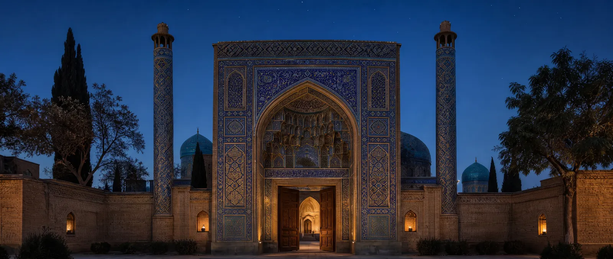

Şehrisebz: Timur’un doğduğu yer
Timur’un doğduğu ve kapısı bugün de görülen bir saray yaptırdığı eski Keş, «Yeşil Şehir».

Semerkant’ın güneyindeki şehre eskiden Keş denirdi; Şehrisebz, «Yeşil Şehir» adı ona Timurlu zamanından kaldı. Burada, geleneğe göre 1336’da Timur doğdu — Barlas boyundan bir beyin ailesinde. Semerkant yakındır ve Timur doğduğu yeri unutmadı: Keş’i ikinci başkent olarak imar etti.
Aksaray
1380’de Timur burada, Harezm’den sürülen ustaların eliyle Aksaray’ı, «Beyaz Saray»ı başlattı. Ondan 65 metreye varan, çinilerle kaplı giriş kule-pilonlarının parçaları kaldı — tasarımı canlandırmak için bu da yeter. 1404 Ağustosu sonunda Timur’a giderken Keş’ten geçen Clavijo sarayı henüz bitmemiş gördü: anlattığına göre yirmi yıldır yapılıyordu.
Yanına Timur, 1376’da ölen büyük oğlu Cihangir’in türbesiyle Dârüssaâde — «Kudret Yurdu» külliyesini yaptırdı; torunu Uluğ Bey de 1437’de babası Şahruh’un anısına Kök Gümbez — «Mavi Kubbe» camisini yaptırdı.
Bugün
2000’de Şehrisebz’in tarihi merkezi UNESCO Dünya Mirası Listesi’ne alındı. 2016’dan beri Tehlike Altındaki Miras Listesi’ndedir: çevre düzenlemesi sırasında anıtların çevresindeki eski mahalleler yıkıldı. Oyunumuzun kapısı — Zurafa’ya girdiğiniz peştak — Aksaray’ın kapısından esinlendi.